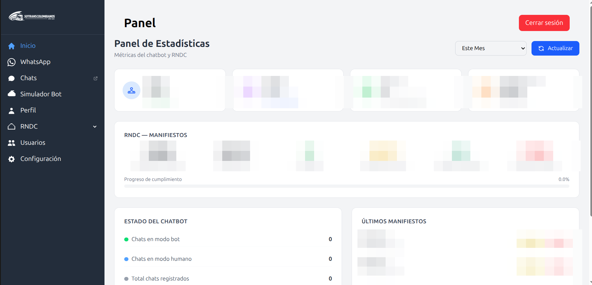

Project_Docubot.SYS
AI WhatsApp agent automating legal document issuance for Colombia's transport sector. Integrates directly with Ministry of Transport systems.
Microservices architecture: Go/Gin API, Rasa NLP engine, Node.js + Baileys WhatsApp gateway, Playwright automation, Vue 3 admin dashboard. Currently running in production.
Stack: Go/Gin, Rasa NLP, Vue 3, Node.js